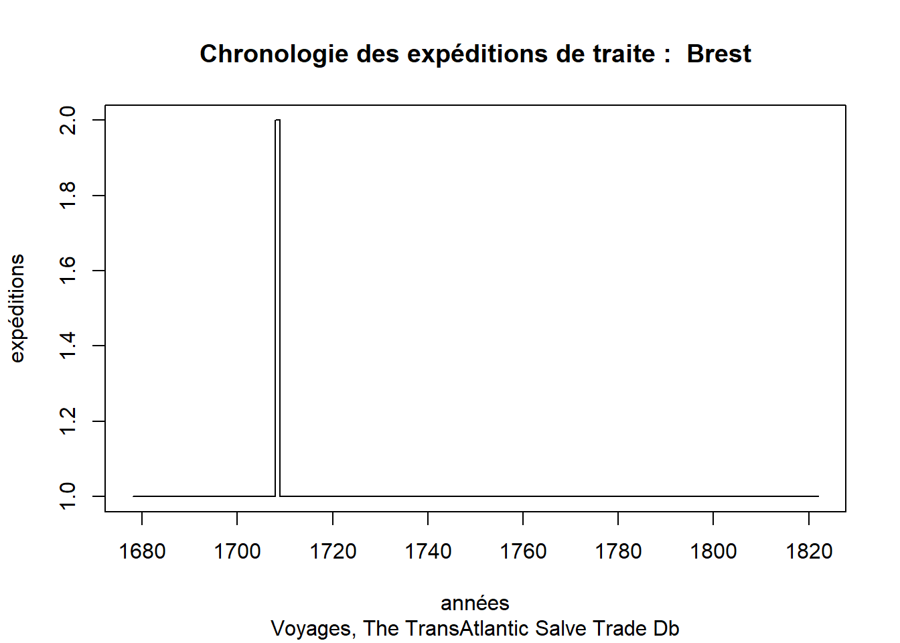
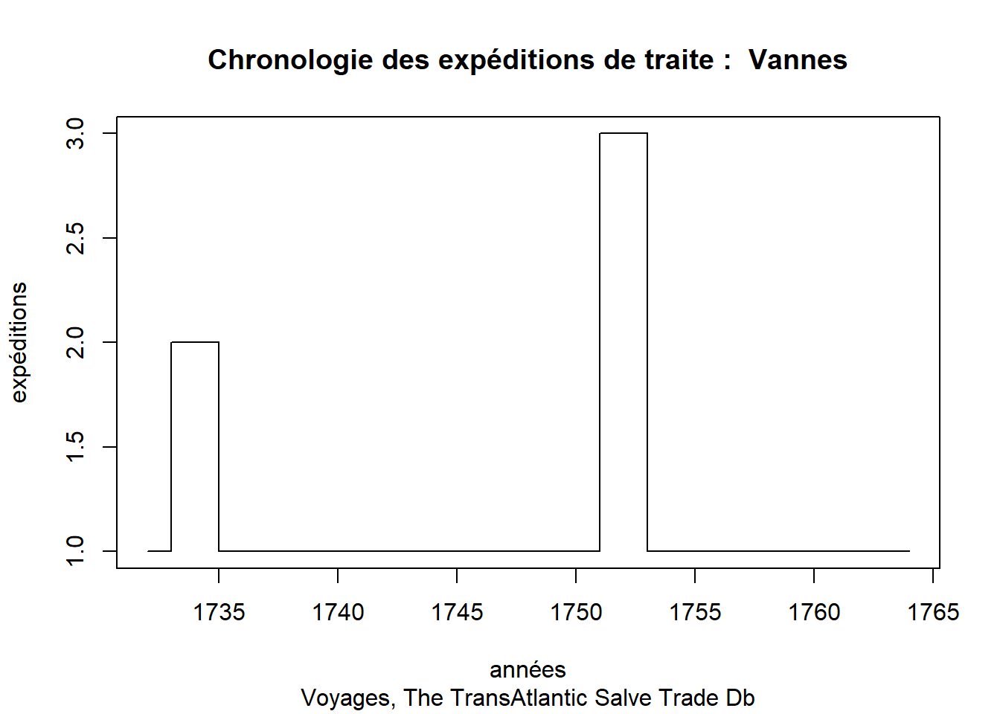
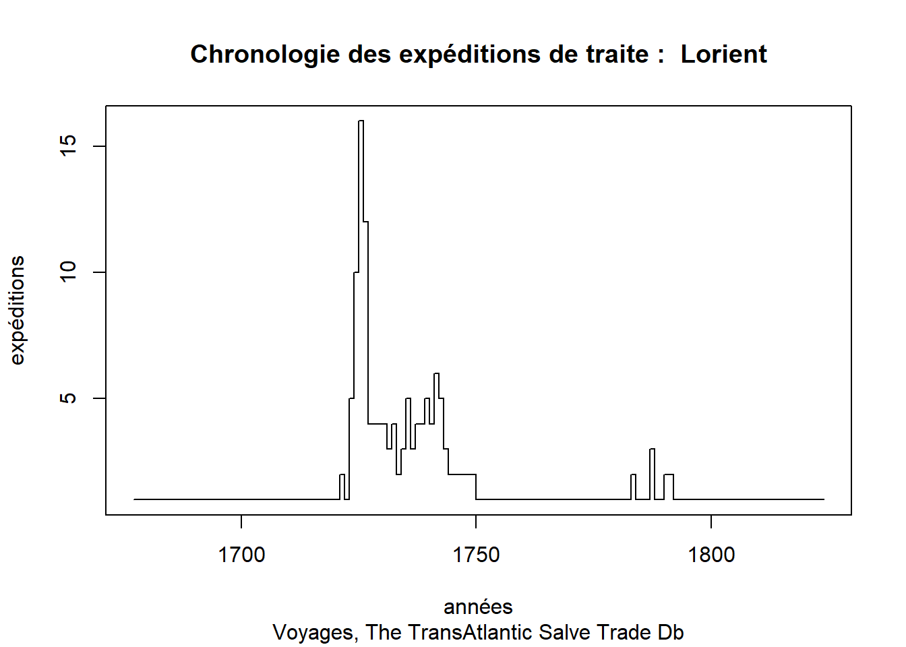
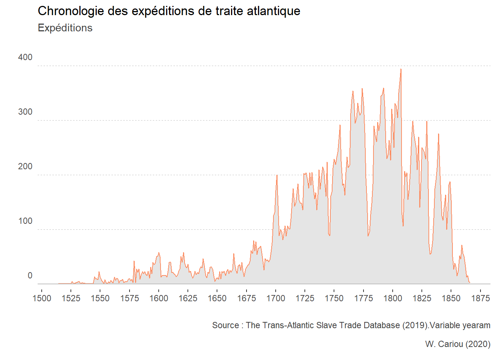

Chapter 6 R intermédiaire
6.1 Fonctions personnalisées
6.1.1 Exemple de fonction : graphiques chronologiques de ports en Base R
Lorsque vous devez répétez des instructions, par exemple pour réaliser des graphiques similaires de différents ports de la base “voyages”, il peut-être utile de programmer une fonction. Cette dernière va contenir la totalité des instructions nécessaires au filtrage et à la construction du graphique. Il ne vous restera plus qu’à appeler la fonction par son nom, saisir le nom du port comme argument et la fonction affichera le graphique correspondant.
Nous supposons que le tableau voyagesest présent dans l’environnement. La fonction graph_port est programmée à l’aide de la fonction function. Les instructions qu’elle possède sont entre accolades. Elle prend comme argument le nom d’un port. Cet argument appelé portest déclaré dans les parenthèses qui précédent les accolades. Lorsque vous exécutez la fonction, vous n’avez qu’à renseigner le nom d’un port. La valeur saisie va être assignée à portet permettre de filtrer le tableau et d’afficher le nom du port dans le titre du graphique.
graph_port <- function (port) {
library(dplyr)
voyages %>%
filter(ptdepimp == port) %>%
count(yearam) %>%
plot(
type = "s",
main=paste("Chronologie des expéditions de traite : ", port),
sub="Voyages, The TransAtlantic Salve Trade Db",
xlab="années",
ylab="expéditions"
)
}


6.1.2 Exemple de fonction : thème graphique (ggplot2)
Un programme peut procéder aux mêmes traitements, ou à des traitements similaires, à plusieurs endroits de son déroulement. C’est par exemple le cas des instructions dédiées à l’apparence des graphiques qui peuvent mettre en jeux des dizaines de paramètres.
Vous pouvez bien entendu répéter le code correspondant autant de fois que nécessaire mais en cas de modification, il va falloir traquer toutes les apparitions de ce code pour faire convenablement la modification !
Il faut donc opter pour une autre stratégie, qui consiste à séparer ce morceau de code du corps du programme .Il ne restera alors plus qu’à appeler ce groupe d’instructions Ainsi, le programme devient modulaire, et il suffit de faire une seule modification pour que cette modification prenne effet dans la totalité du programme.
Le corps du programme s’appelle alors la procédure principale, et ces groupes d’instructions auxquels on a recours s’appellent des fonctions.
A titre d’exemple, voici une fonction personnalisée qui stocke un thème pour les graphiques conçus avec le package ggplot2. Grâce à la fonction, il devient inutile de reproduire ces instructions pour chaque graphique à réaliser. Il suffit pour chaque graphique d’appeler la fonction my_theme_chrono1.
La fonction my_theme_chrono1 est programmée à l’aide de la fonction function. Les instructions qu’elle possède sont entre accolades. Dans le cas présent, la fonction ne prend pas d’arguments.
- Fonction :
my_theme_chrono1 <- function() {theme(plot.caption =element_text(colour = "grey25"),
plot.subtitle = element_text(colour = "grey25"),
axis.line.y = element_blank(),
panel.background = element_blank(),
panel.grid.major.x = element_blank(),
panel.grid.minor.x = element_blank(),
panel.grid.minor.y = element_blank(),
panel.grid.major.y = element_line( size=.1, color="grey", linetype = "dashed"),
axis.ticks.y = element_blank(),
axis.text.y.left = element_text(vjust = -0.9),
axis.line.x = element_blank())
}- Utilisation de la fonction au sein d’un graphique :
n_exped <- voyages %>%
count(yearam)
gg_chrono1 <- ggplot(n_exped, aes(x= yearam, y= n))
gg_chrono1 +
geom_area (color="#fc8d62", fill="#E5E5E5") +
scale_x_continuous(breaks=seq(1500, 1875, by=25)) +
geom_hline(yintercept=0, linetype="solid", color = "grey") +
labs(title = "Chronologie des expéditions de traite atlantique",
subtitle = "Expéditions",
caption ="Source : The Trans-Atlantic Slave Trade Database (2019).Variable yearam
\n W. Cariou (2020)", x="",
y="") +
my_theme_chrono1() + # Utilisation de la fonction
scale_y_continuous(limits = c(-10,450), expand = c(0, 0)) 
6.2 Programmation
Programmer revêt comme signification le fait d’agir sur le déroulement d’un programme. Lorsque vous devez agir sur ce déroulement, vous aller employer des structures de contrôles.
6.2.1 Boucle for
- La boucle for permet de répéter les mêmes instructions plusieurs fois.
- Une boucle for possède une limite fixée d’itérations définie à l’avance.
6.2.1.1 Exemples
x <- "Grr"
for (i in 1:4){ #<< Initialisation de nombre d'itération de la boucle (compteur).
print(x) #<< instruction à répéter.
}## [1] "Grr"
## [1] "Grr"
## [1] "Grr"
## [1] "Grr"## [1] "*"
## [1] "* *"
## [1] "* * *"
## [1] "* * * *"
## [1] "* * * * *"
## [1] "* * * * * *"6.2.1.2 Cas pratique : représentation en Base R construite à partir d’une boucle for
- Nous supposons que le tableau
voyagesest présent dans l’environnement.
- L’en-tête de boucle :
iest une variable créée par la fonction for. Elle va prendre prend successivement chacune des valeurs unique de la variableexped_flags$natinimpà chaque itération de la boucle.
- Corps de la boucle. A chaque itération :
- On filtre l’objet
exped_flagsen se basant sur la variablenatinimpdont la valeur valeur varie en fonction de i. - On stocke le tableau filtré dans un objet appelée graphique.
- on affiche le graphique de i par la fonction plot en définissant x et y et en définissant un titre basé sur i.
- On filtre l’objet
# Préparation des données
exped_flags <- voyages %>%
count(yearam, natinimp) %>%
filter(complete.cases(natinimp)) %>%
filter(!natinimp =="Other")
# Affichage
par(mfrow=c(3, 3))
# Boucle
for(i in unique(exped_flags$natinimp)){
graphique <- exped_flags %>%
filter (natinimp == i)
plot(graphique$yearam,
graphique$n,
main=i,
xlab = "",
ylab = "expéditions de traite",
type ="l")
}